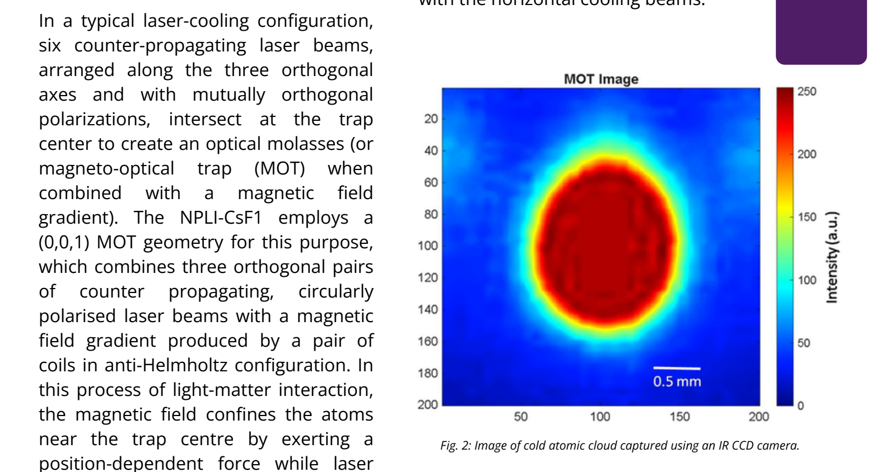
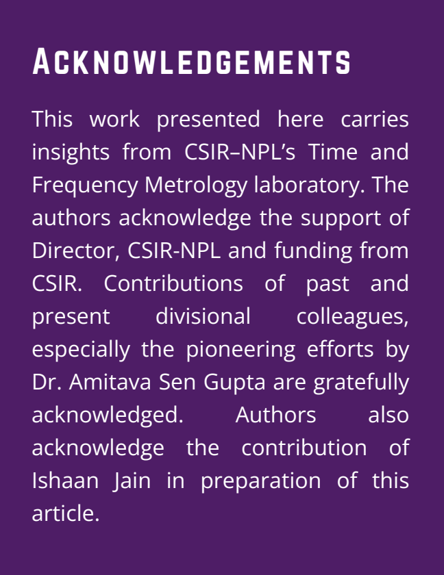

Cloud Density Profiler
A lightweight analysis interface that helps researchers crop atomic cloud images, tune visibility, and translate density patterns into measurable profiles.
COM X103.42 px
COM Y98.77 px
Turning a research script into a guided analysis experience.
Developed during my R&D internship at CSIR-NPL under Dr. Poonam Arora, this project reframes a scientific image-processing task as a guided decision flow. Instead of exposing every computation at once, the interface moves users through upload, crop, visibility tuning, and evidence review so the analysis feels inspectable rather than opaque.
 Streamlit, Python, NumPy, SciPy, Plotly, scikit-image
Streamlit, Python, NumPy, SciPy, Plotly, scikit-image
Scientific image analysis often starts with a deceptively small task: isolate the relevant cloud region, normalize it, then decide whether the resulting profile is meaningful. The interface had to make each step visible and reversible.
Raw images are noisy.
Researchers need to crop and normalize the relevant region before quantitative analysis is useful.
Visual density needs numbers.
A bright center is not enough; users need center-of-mass values and directional profiles.
Analysis needs inspection.
Heatmaps, line profiles, and 3D surfaces help users cross-check the same result from multiple views.
02 · Design Approach
How a designer approaches a scientific analysis tool.
Separate preparation from interpretation.
The user is not just running code. They are deciding whether a cloud image is clean enough to trust, so the interface has to support judgement before calculation.
Make comparison possible.
A square crop and normalized 200x200 output reduce ambiguity, making heatmaps, profiles, and center-of-mass values comparable across uploads.
Prototype the analysis surface quickly.
Streamlit makes Python analysis interactive, while Plotly, Matplotlib, SciPy, and scikit-image turn raw image data into explainable visual evidence.
Preparation controls stay separate from interpretation.
Crop and gamma correction live in the sidebar, while the main canvas is reserved for image comparison and analysis outputs. This supports a clean mental model: prepare on the side, inspect in the center.
Consistency beats flexibility for this task.
The cropper enforces a 1:1 region and resizes it to 200x200 px. That constraint makes heatmaps, profiles, and center-of-mass calculations easier to compare across images.
Users decide when the image is ready.
Instead of auto-running analysis after every slider movement, the app waits for an explicit "Analyze Edited Image" action. That gives users a sense of control and keeps the workflow intentional.
04 · Interactive Demo
A four-step journey from image to evidence.
Selected step · 01
Start with a familiar upload pattern.
The app opens in a low-pressure waiting state. Users are not shown analysis controls until an image exists, preventing premature decisions.
Choose an image...
JPG · JPEG · PNG
05 · Analysis Surface
Multiple views of the same phenomenon.
2D heatmap
Maps normalized grayscale density with an optional center-of-mass marker for spatial validation.
1D profiles
Separates horizontal and vertical density sums so asymmetry becomes easier to inspect.
3D surface
Uses Plotly to help users rotate and inspect the density surface interactively.
Input
PIL image upload
Preprocess
Crop, resize, gamma
Analyze
Grayscale + center of mass
Output
Metrics + plots
The core helper function calculates center of mass and 1D profiles from the normalized 2D image. The rest of the interface is designed to help the user trust that calculation.
Outcome
A compact scientific tool with a clear preparation-to-analysis rhythm.
Reduced cognitive load
The app gates advanced analysis until the user has uploaded, cropped, and adjusted the image.
Better interpretability
Center-of-mass metrics are supported by heatmap, directional profiles, and 3D surface views.
Future improvement
The next version could add session history, comparison between multiple clouds, and exportable reports.
Recognition
Used in Quantum Vibes Q1 2026.
The results obtained using this application were used in Quantum Vibes Q1 2026, where I was acknowledged for my work on the project.

